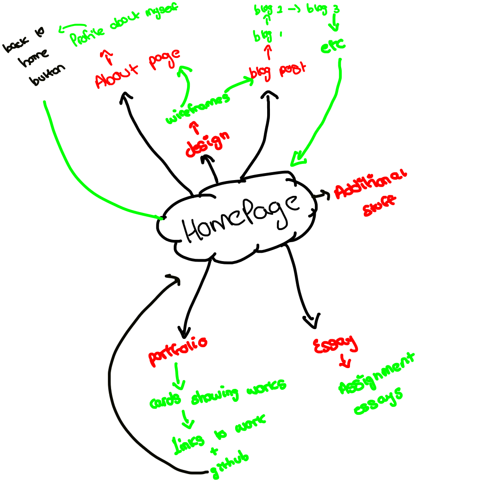
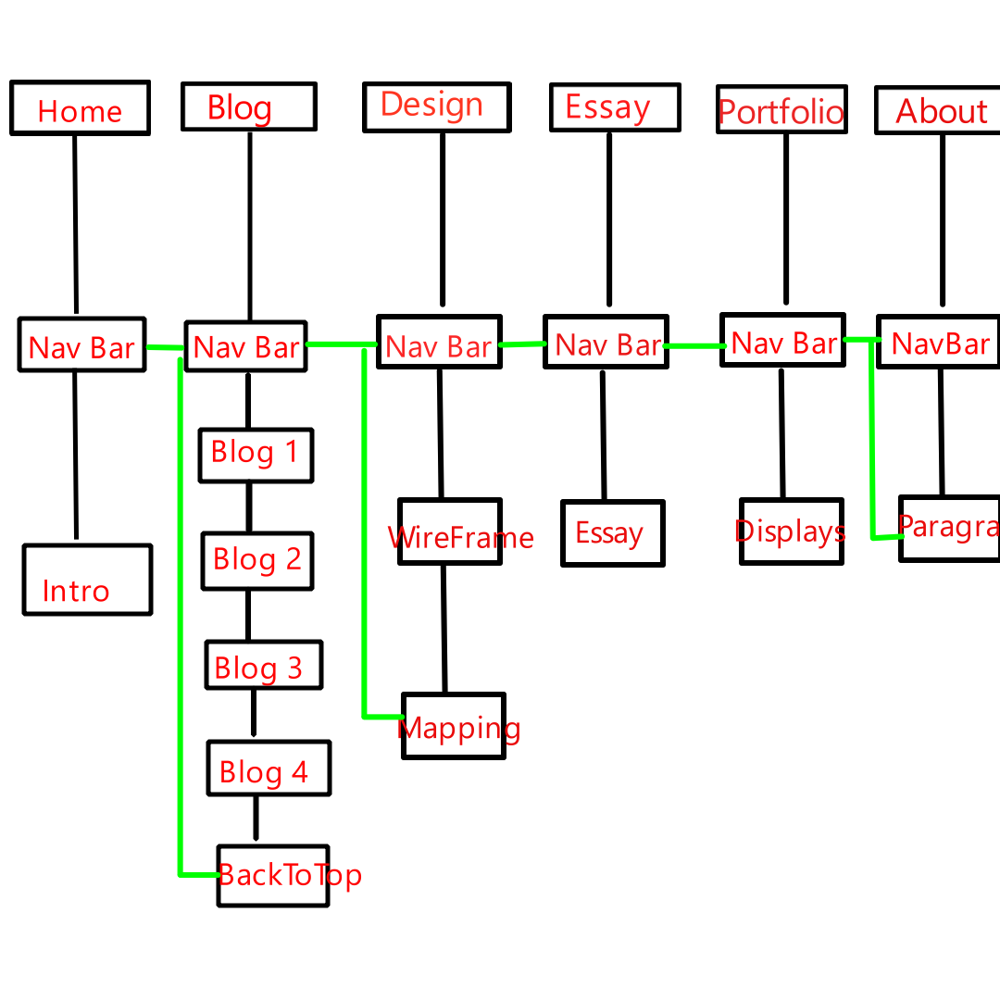

WireFrame Planning
| Wireframe |
Description |
 |
This wireframe depicts the planning for the home page. In it we can see the main heading for the website, followed by a navigation tab that will allow the users to view each section of the website. On the homepage, there will be a small introductory paragraph so that users will know what to expect. At a later point, previews of my portfolio works will be added to entice users to want to see the portfolio, they will also be hyperlinks to give them fast access to each work |
 |
This will be the layout for the About Page and Essay Page.These pages will be mostly text based and so require the text to be at the forefront with assisting images aligned next to it. Compared to the portfolio or homepage which will have cards previewing the work, the essays will be academic and therefore displayed formally. |
 |
Similar to the About and Essay Pages, the blog posts are mainly text based with associating images. Each blog post will be divided into its own sections and have multiple paragraphs discussing the required topics and questions for each week. Blog posts will be separated by a horizontal rule to maintain order and prevent different week blog posts from becoming mashed up |
 |
This is the planned wireframe for the portfolio page. Each work will have its own unique card that will have a preview of the game or a thumbnail. Underneath each one will have a description of that specific card. The card will be hyperlinks that when clicked on will take the user to the itch.io or github repo for the game or website. Arrows will be available to slide to view other games/websites. I am planning on making the design page similar, however until I learn how to do it I will have it in a table format with the wireframe or map and the description in the next coloumn |
| Map |
Description |
 |
The mapping is done on the wireframes and displays the chronological order in which users view the webpage. In this map, it displays the left-right bias, which is a cognitive effect where people tend to process information and scan visual elements from left to right. For user interface we focus on placing important information towards the left of the screen, however positional memory also plays a key role as the user is likely to remember according to placement, as headings that are either first or last are remembered more.
|
 |
This map follows the portfolio screen. The portfolio will be one of the most important aspects of the website and because of this there will be less "flavour text" on this section. Each game or website will have it's own dedicated space ont the page, where it will be displayed in a card format with a description beneath it.The works I am most proud about will be on the front as those are what I would like to headline and be the primary focus. |
 |
The blog posts are an important aspect of the website, however each blog post will not have as much focus given to it such as the portfolio. The blog posts will be a mix between academic formal and informal writing. It will be mostly text-based. Each heading for each blog post will stand out to the user and a contents page that allows the user to jump to each blog post could be a better way for the user to navigate, instead of placing each blog post in its separate document, which can cause the directory structure to become messy in the future, depending on how many blog post entries we will have. |
|  |
This is a very simplified mapping of the overview and structure of the website. It displays all the possible locations for the player and how each section can be navigated to and from the home page, depicting it as a central system revolving around the home page. I will flesh it out more to provide more detail. |
|  |
Here we can see the layout of the website in a more concise diagram. It displays each section of the website and the contents of each and how they link to each other. All sections will have the same navigation bar to have uniformity and they will each link to each other. Certain sections will display more than others for the time being, until the Essay and Portfolio section is filled |